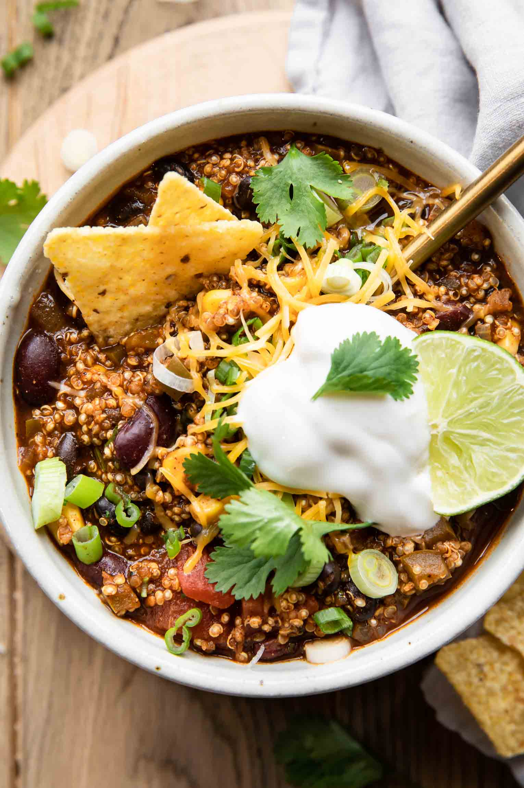

Quinoa Chili

Easy Quinoa Chili Recipe
I love it when I can create a quick and delicious meal with simple ingredients! Especially when it’s something the entire family can enjoy for dinner. Even my toddler couldn’t get enough of this one! Vegetarian, vegan, gluten-free, and fast – what could be better?
Ingredients
- 2 Tablespoons avocado oil
- 1 medium onion (finely diced)
- 1 small bell pepper (finely diced)
- 2 teaspoons minced garlic
- 2 cups dry quinoa
- 1 8-ounce can tomato sauce
- 4 cups vegetable broth (divided)
- 3 Tablespoons chili powder
- 1 Tablespoon cumin
- 2 teaspoons paprika
- 1/4 teaspoon cayenne
- salt/pepper (to taste)
- 1/2 cup canned corn
- 1 14.5-ounce can diced tomatoes
- 1 15.5-ounce can black beans
- 1 15.5-ounce can red kidney beans
- 1/4 cup freshly chopped cilantro (or 2-3 teaspoons dried cilantro)
Instructions
- In a large Dutch oven, sauté the onion and bell pepper in the avocado oil over medium-high heat until just tender (about 5-7 minutes).
- Add the minced garlic and quinoa, stir to combine.
- Slowly pour in the tomato sauce and 3 cups of vegetable broth.
- Mix in seasoning, then stir well.
- Add the lid to the Dutch oven, turn the heat to low, and simmer for 10 minutes.
- Add the remaining 1 cup of broth.
- Add the corn, tomatoes, and beans. Cook for an additional 7-10 minutes until the quinoa is fully cooked.
- Remove from the heat, and stir in the fresh cilantro.
- Serve with your favorite toppings and enjoy!
Notes
Carbs: 369 Fat: 69 Protein: 18